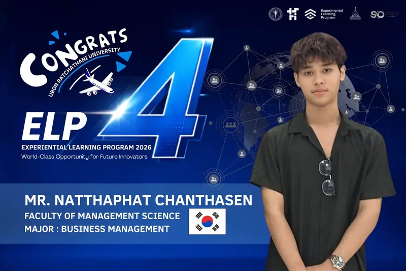
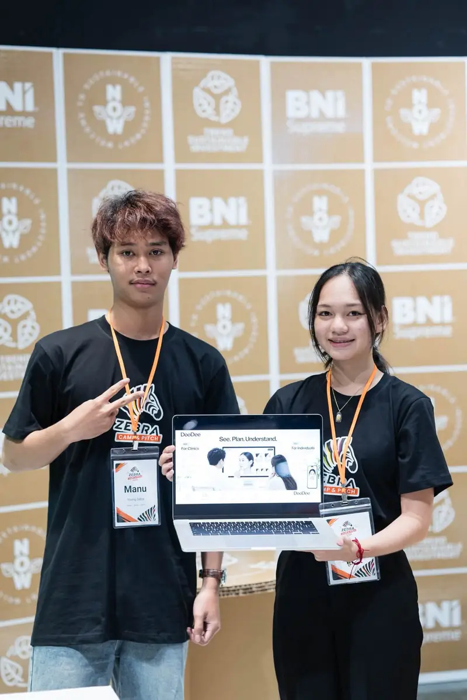

Faceliora สู่ ELP Season 4 เตรียมแลกเปลี่ยนเรียนรู้ที่เกาหลีใต้
ณัฐภัทร จันทะเสน จากมหาวิทยาลัยอุบลราชธานี ได้รับคัดเลือกเป็นตัวแทนประเทศไทยใน ELP Season 4 ด้วยผลงาน Faceliora เตรียมเดินทาง 10–25 ตุลาคม 2569
อ่านเรื่องนี้ติดตามข่าว กิจกรรม Startup และก้าวใหม่ของทีม Faceliora พร้อมแนวคิดเบื้องหลังผลิตภัณฑ์

ณัฐภัทร จันทะเสน จากมหาวิทยาลัยอุบลราชธานี ได้รับคัดเลือกเป็นตัวแทนประเทศไทยใน ELP Season 4 ด้วยผลงาน Faceliora เตรียมเดินทาง 10–25 ตุลาคม 2569
อ่านเรื่องนี้
บันทึกกิจกรรมของทีม Faceliora ในเวที P1 New Regional Startup 2026 โครงการสร้างผู้ประกอบการรายใหม่ในภูมิภาค พร้อมภาพจากกิจกรรม
เข้าใจขั้นตอนใช้แอปภายนอกสร้างโมเดล แล้วนำเข้าโปรแกรม 3D ของเรา

Faceliora พัฒนา Faceliora Clinic โปรแกรมจำลองใบหน้า 3D สำหรับคลินิกความงาม และ Faceliora Web วิเคราะห์ใบหน้า 2D บนเว็บ เพื่อการปรึกษาที่เห็นภาพชัดขึ้น โดยไม่แทนการประเมินของแพทย์
รู้จักทีม Facelioraภาพกิจกรรมเป็นภาพที่เจ้าของเว็บไซต์ส่งให้